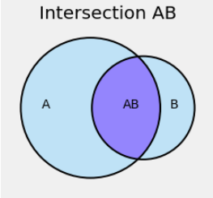
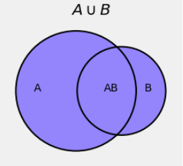

The Chance of an Intersection
Contents
2.1. The Chance of an Intersection#
The intersection of two events is a subset of each of them, so its chance is less than or equal to the chance of each one and hence is at most equal to the minimum of the two chances.

But how do we find it exactly? Let’s start out with a simple example.
2.1.1. Two Cards from a Deck of Three#
I deal two cards at random without replacement from a deck that contains one red, one blue, and one green card. This means:
I pick one of the three cards at random.
Then I pick one card at random from the two cards that remain in the deck.
That is, I don’t replace the card the first card I picked before drawing the second one.
What is the chance that I draw the blue card followed by the red card?
We can answer this by listing all possible outcomes and seeing which ones correspond to the event in question.
The outcome space \(\Omega\) is the set of all possible pairs of cards, keeping track of which was first and which was second. If we let R stand for the red card, B for the blue, and G for the green, then \(\Omega = \{ RB, RG, BG, BR, GR, GB\}\).
The event “the blue card followed by the red card” consists of just one outcome, BR.
The draws are at random, so all six pairs are equally likely. The chance of getting a blue card followed by a red card is therefore \(1/6\).
It is illuminating to keep track of the draws in sequence and write the answer \(1/6\) as a product:
The factor \(1/2\) is the chance of drawing the red card from the reduced deck consisting of just the red and green cards. This probability is known as the conditional probability of drawing a red card second, given that the first card drawn is blue.
We write
The vertical bar in the conditional probability is read as “given that”.
That’s still quite long, so we will introduce some notation that keeps track of the pair of cards in order. Define the following events:
\(B_1\) is the event that the first card is blue
\(R_2\) is the event that the second card is red
The event in question is the intersection \(B_1 R_2\), and the result is
This example motivates one of the fundamental rules of probability.
2.1.2. Multiplication Rule#
We now have a method of finding the chance of the intersection of any two events \(A\) and \(B\). The chance is given by
where the second factor on the right hand side is the conditional probability that B occurs given that A occured.
For example, suppose you deal two cards from a standard deck that has 52 cards of which 13 are hearts. You can assume that this means you pick one card at random from all 52 cards and then another at random from the remaining 51. Then
The second factor on the right hand side is the conditional probability that the second card is a heart given that the first card was a heart. If the first card was a heart then there are only 12 hearts among the 51 cards that remain after the first card is drawn.
In these examples about cards, the conditional probabilities we needed were easy to find. But sometimes it is not possible to find it based on the information given – someone has to go get more data, or summarize the available data in a different way, for us to know the conditional chance that we need.
For example, consider the randomly picked teen of the previous chapter and recall that we knew the chance that the teen used Facebook as well as the chance that the teen used Twitter. These chances were:
\(P(\text{used Facebook}) ~ = ~ 0.51\). That is, 51% of all teens in the population used Facebook.
\(P(\text{used Twitter}) ~ = ~ 0.32\). That is, 32% of all teens in the population used Twitter.
What is the chance that the teen used both platforms? Let’s try to calculate it. By the multiplication rule,
But now we are stuck. The conditional probability \(P(\text{used Twitter} \mid \text{used Facebook})\) is the proportion of teens who used Twitter among those who used Facebook. We don’t know that proportion. Though the proportion of Twitter users among all teens is 32%, it need not be 32% among the Facebook users.
To find the proportion of teens who used both platforms, we must request the Pew Research Center to go back to the survey responses and find the proportion who used both platforms. We can’t figure it out from the available summary because the summary only provides usage data for individual platforms, not pairs.
2.1.3. Inclusion-Exclusion#
If two events are not mutually exclusive, then their intersection helps us find the chance of their union.
In the figure below, the blue region is the union of the events \(A\) and \(B\).

We know that if we try to find \(P(A \cup B)\) by just adding \(P(A)\) and \(P(B)\), our answer will be too big. The figure shows that the answer will be too big because we will have included the intersection \(AB\) twice: once as part of \(A\) and then again as part of \(B\).
So if we try to find \(P(A \cup B)\) by adding \(P(A)\) and \(P(B)\) then we must fix our error by subtracting \(P(AB)\):
This is called an inclusion-exclusion formula. Bonferroni developed a sequence of such formulas for an increasing number of events in the union.
Notice that the inclusion-exclusion formula is true for all events \(A\) and \(B\). The addition rule is only for mutually exclusive events, which is of course the case when \(P(AB) = 0\).
Suppose I roll a die twice. What is the chance that the face with six spots appears at least once?
Let \(S_i\) be the event that the die shows a six on Roll \(i\). Then the probability we want is
by the inclusion-exclusion formula and the multiplication rule. Now \(P(S_2 \mid S_1) = 1/6\) because the chance that the second roll is a six is not affected by what appeared on the first roll. So
Sometimes you can avoid using inclusion-exclusion by approaching the problem in a different way. The event “at least one six” is the complement of “no sixes”, and so
as before. This method has the advantage that it extends immediately to more rolls. For example,
2.1.4. Intersection of Several Events#
The standard deck consists of 13 cards in each of four suits: hearts, diamonds, spades, and clubs. Suppose you deal five cards from a well-shuffled deck. This means the five cards are dealt at random without replacement, and is a good model for a 5-card poker hand.
Question 1: What is the chance that all five cards are hearts?
Answer: By a natural extention of the multiplication rule, the answer is
Formally, if \(H_i\) is the event that Card \(i\) is a heart, then we have extended the multiplication rule to say
Notice that the answer is a fraction of a fraction of a fraction … and so on. Each time you impose a new condition – for example, “Card 3 has to be a heart too” – you reduce the chance of getting what you want.
The extension can be proved easily by induction; we will leave that to another class.
Question 2: What is the chance that all five cards are of the same suit?
Answer: This kind of hand is called a flush. Resist the impulse to say that the answer is the same as that in Question 1. Before you calculate, compare the two events:
all five cards are hearts
all five cards are of the same suit
The latter is more likely because it includes the former and also includes other possibilities. For example it includes “all five cards are spades”.
This observation leads to one natural way to solve the problem: Partition the event into smaller pieces (that is, make an exhaustive list of distinct ways it can happen), and add up the chances of the pieces.
Partitioning events, informally known as “listing the ways,” is a fundamental method of calculating chances.
Another good way to think about this problem is to take one card at a time. For the event to occur,
the first card can be any card in the deck,
the second card must be of the same suit as the first,
the third card must be of the same suit as the first two, etc
So
which is the same as the answer we got by partitioning.